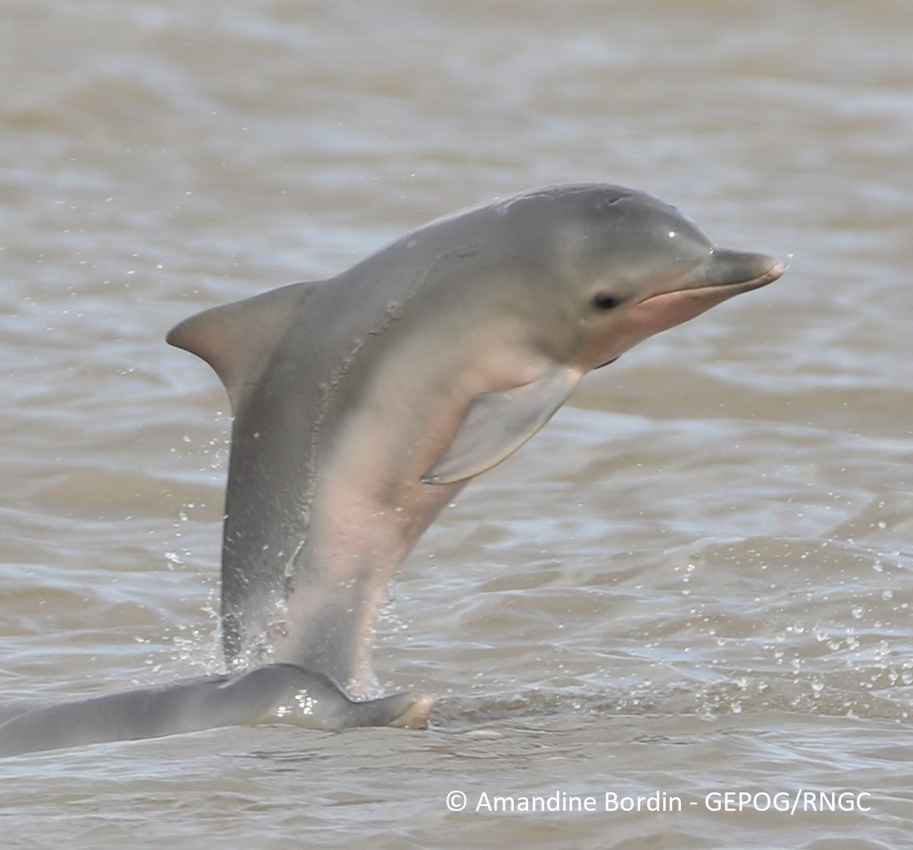
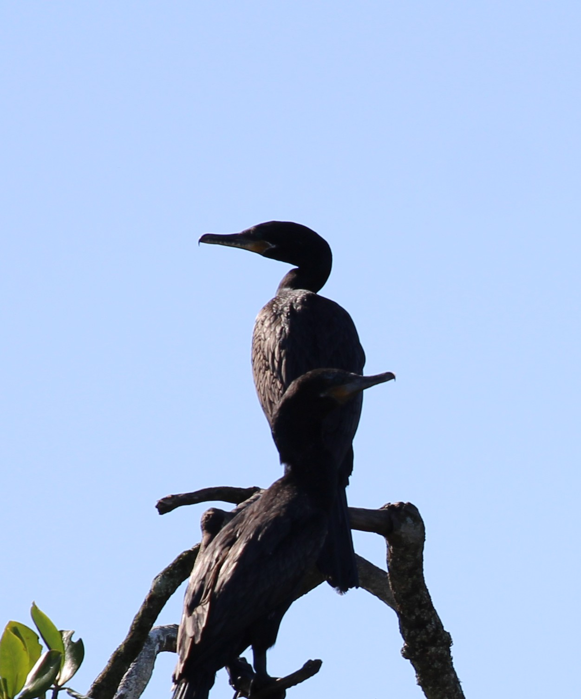
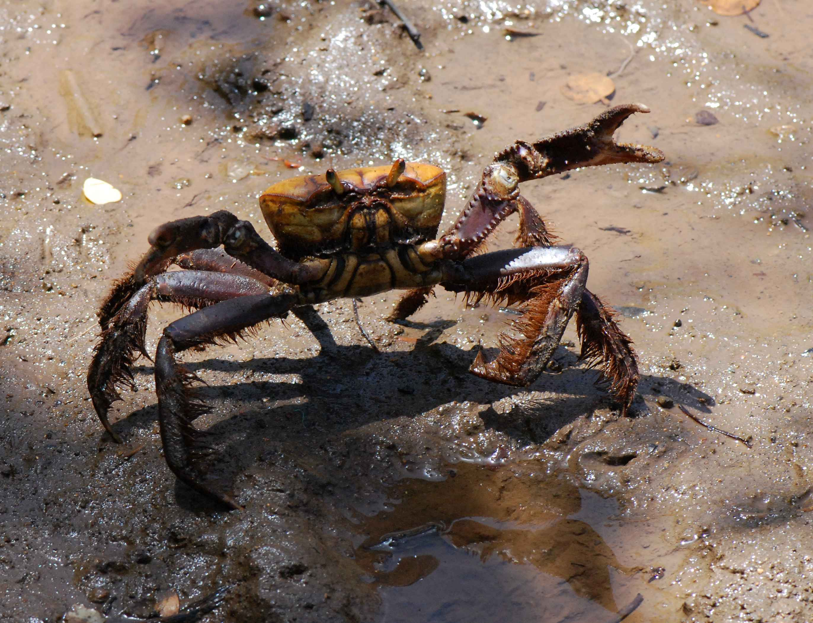
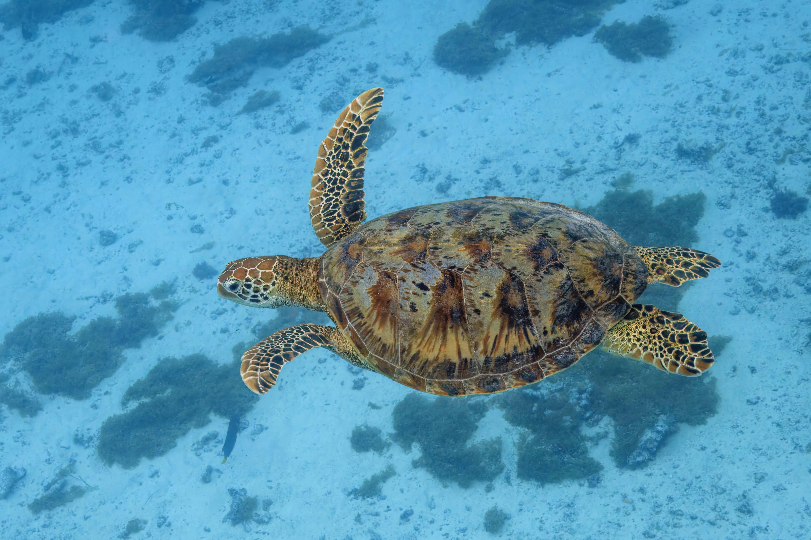
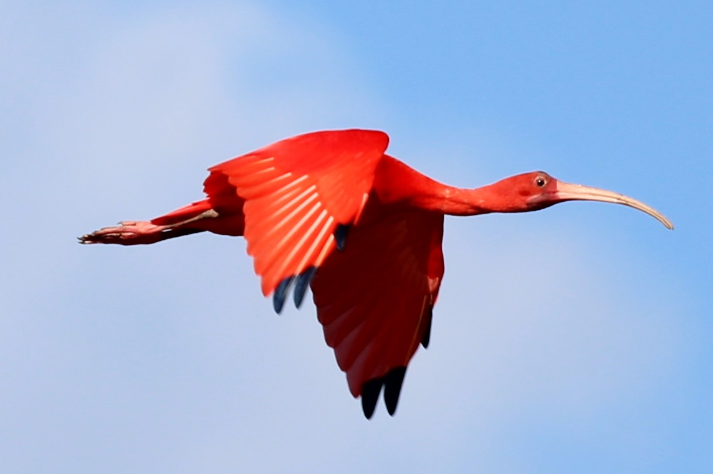
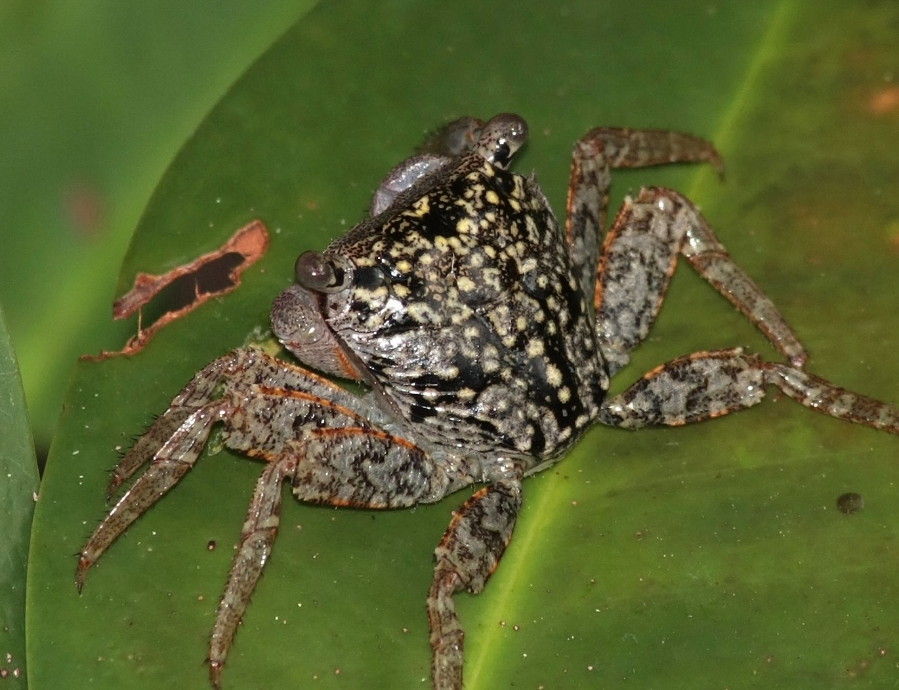
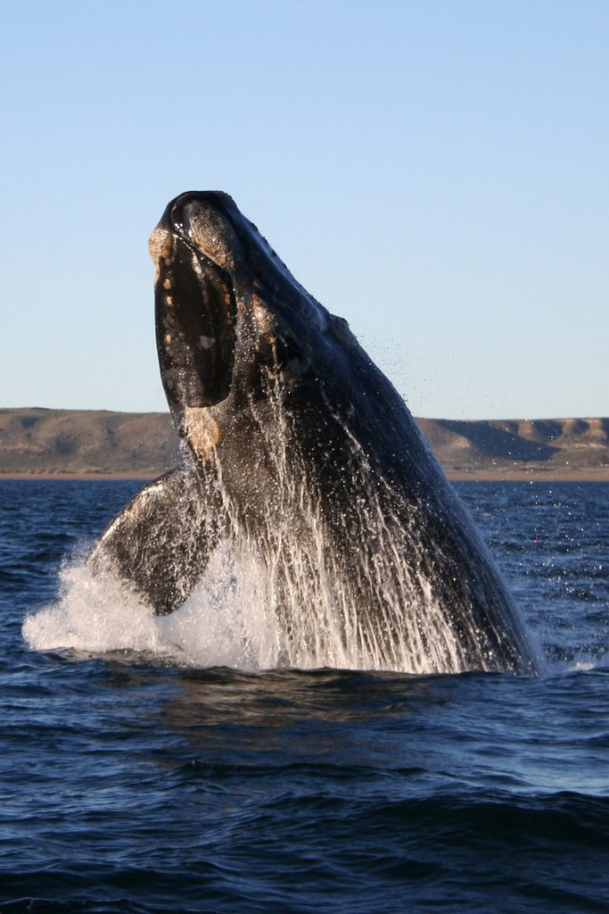
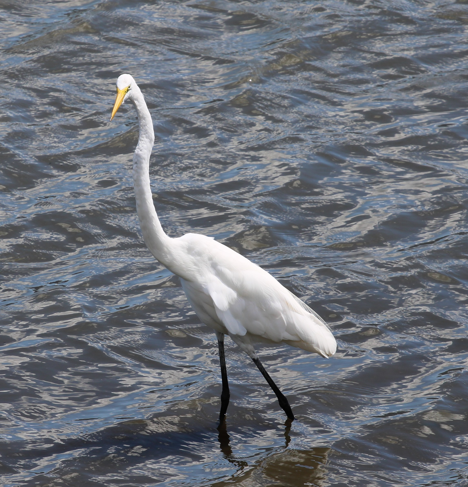
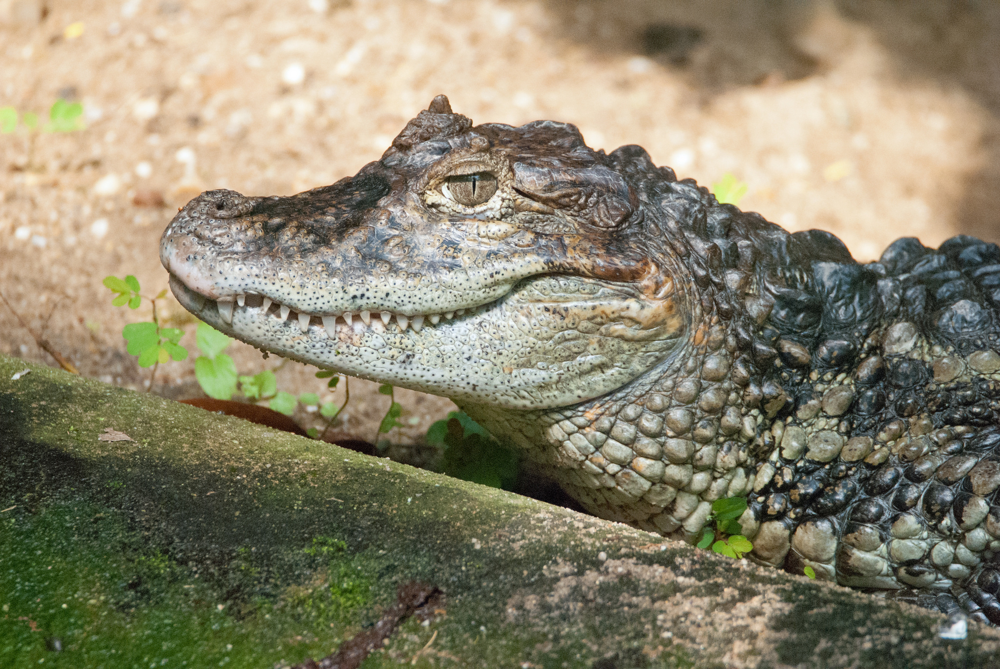

Escolha para onde ir

Um golfinho sociável que costuma nadar perto dos barcos de pesca.
Foto: Amandine Bordin · CC BY-SA 4.0

Mergulha fundo para pescar e depois abre as asas pra secar no sol.
Foto: Cesar Augusto Chirosa Horie · CC BY-SA 4.0 · Modificado do original

Vive entre as raízes do mangue e ajuda a manter o solo saudável.
Foto: Pancrat · CC BY-SA 3.0

Uma nadadora tranquila que passeia pelas águas da baía e adora se alimentar de algas marinhas.
Foto: Charles J. Sharp · CC BY-SA 4.0

Uma ave de cor vermelho-vibrante que ganha esse tom lindo ao comer caranguejos no manguezal.
Foto: Cesar Augusto Chirosa Horie · CC BY-SA 4.0 · Modificado do original

Um caranguejo avermelhado e muito ágil que adora subir nas raízes e troncos das árvores do mangue.
Foto: Ianaré Sévi · CC BY-SA 3.0 · Modificado do original

Uma gigante dos oceanos que visita águas calmas para cuidar de seus filhotes.
Foto: Michaël Catanzariti · CC BY-SA 4.0

Caminha devagar pelas águas rasas e usa seu bico comprido para pescar num piscar de olhos.
Foto: Cesar Augusto Chirosa Horie · CC BY-SA 4.0 · Modificado do original

Um réptil silencioso que adora tomar sol na beira da água para aquecer o corpo.
Foto: TimSagorski · CC BY-SA 4.0
Cada lixo tem um tempo diferente pra sumir da natureza — alguns nunca somem
2 a 12 meses pra decompor. Pode ir no lixo orgânico ou na compostagem — é o que mais rápido desaparece.
Mais de 5 anos pra decompor, e ainda solta veneno na água. Nunca jogue na areia — leve até uma lixeira.
Mais de 400 anos pra decompor. Separe pra reciclagem — plástico no mar vira pedacinhos que os animais confundem com comida.
Mais de 200 anos pra decompor. É 100% reciclável — sempre separe pra reciclagem.
Tempo indeterminado — o vidro praticamente não desaparece da natureza. Recicle sempre, e nunca deixe na areia, porque quebrado machuca.
Tempo indeterminado — não se decompõe, só se quebra em pedaços cada vez menores. Evite usar e descarte no lixo comum bem fechado.
Mais de 20 anos pra decompor. É um dos maiores perigos pra animais marinhos, que ficam presos nela — nunca abandone na água.
Tempo indeterminado pra decompor. Leve pra um ponto de coleta — muitos lugares reaproveitam pneus velhos.
Dúvidas, sugestões ou correções? Manda pra gente!
Ou fale direto por aqui